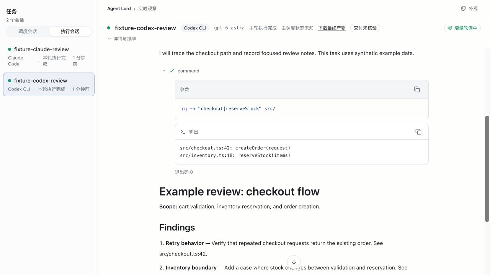

AGENT ORCHESTRATION
Agent Lord
把多个编程 Agent 组织成可继续、可核验的开发流程。
从交叉评审、计划重写，到并行实现和任务交接，让每一步都有记录、有验收。
介绍复核于 · 查看依据版本 158ef89

适合什么时候用
你在主会话里推进一个开发任务，同时需要其他编程 Agent 做独立评审、探索不同实现，或者继续上次留下的问题。Agent Lord 保存这些任务的会话、执行设置和结果，让主会话可以安排工作、跟进进度，再收回产出。
它由调用方 Skill、负责执行与监督的 CLI runtime，以及用于观察进度的 Observer 组成。任务拆分和推进仍由主会话负责。
选一条工作路径
从单个任务开始，也可以按目标选择已有工作流。主会话负责推进流程，执行端负责具体任务；会话、执行记录与交付证据分别保存。
交叉评审
两个独立评审者先给结论，再相互质询；分歧解决后，由新的独立会话复核。
阅读工作流说明 ↗计划交叉评审
对照需求与源码评审计划，交叉质询并独立检查方案；新的作者会话重写完整计划，再自查覆盖情况。
阅读工作流说明 ↗计划到实现
按模块和依赖并行实现，各自提交后，由一个整合者合并、验证并创建 PR/MR。流程不会自动合入。
阅读工作流说明 ↗任务交接
把目标、进度与证据交给新的 CLI 会话，在原工作区继续，并记录交接关系。
阅读工作流说明 ↗
计划交叉评审的最终文档由作者自查确认；计划到实现会创建 PR/MR，合并仍需另行授权。完成执行、通过测试与确认正确，是不同的判断。
关键能力
会话可以延续
保留任务端点与执行约定，后续轮次接着原任务推进。
运行中有监督
通过检查点跟踪完成、可处理的错误与端点支持的恢复机会。
过程有记录
查看请求、工具活动、结果和可获得的模型证据。
交付物单独检查
验证声明的文件存在且非空，或提交与工作区满足交付条件。
开始使用
引用版本需要 Node.js 24+、pnpm 9.12.0、Git，以及已安装并登录的目标 CLI。支持 Claude Code、Codex CLI 和 MCode CLI；MCode 需要 0.4.9 或更高版本。使用 Codex App 任务时，还需要 Codex Desktop 的宿主工具。
完整安装、Skill 接入与首个任务步骤见版本化 README。升级时先看迁移说明。
使用前了解的边界
Observer 不发起任务或推进工作流；在用户明确要求时，可以打开已有 CLI 会话的终端入口。执行成功、交付物存在和代码正确，是三项需要分别判断的结果。Codex App 端点只展示任务状态，CLI 端点可展示会话与工具活动。
引用版本的 Skill 会以权限跳过模式启动新 CLI 任务。“只评审、不修改”属于任务指令，不能把执行进程变成只读沙箱。首次运行前应读清执行约定，选择合适的工作目录与授权范围。
阅读执行约定 · 本地验证平台为 macOS；项目未声明完成 Windows 端到端验证。